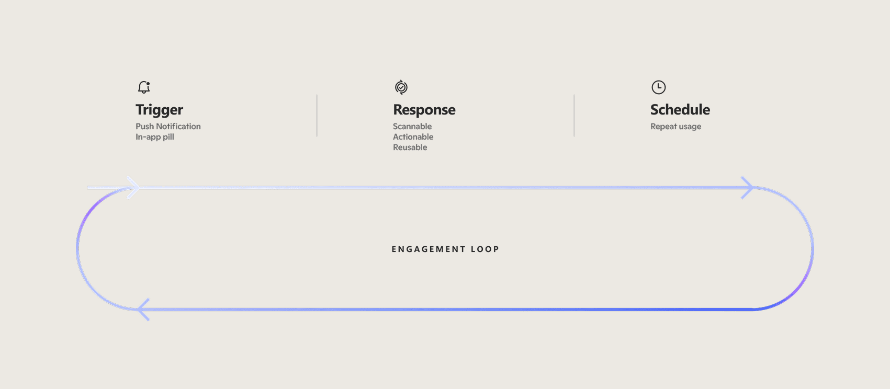
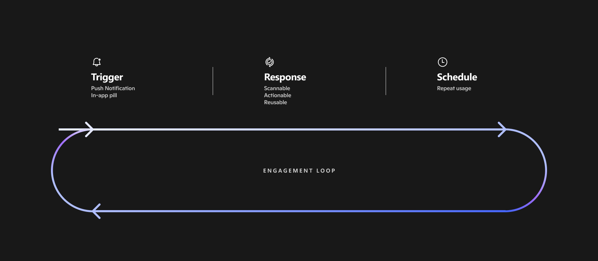
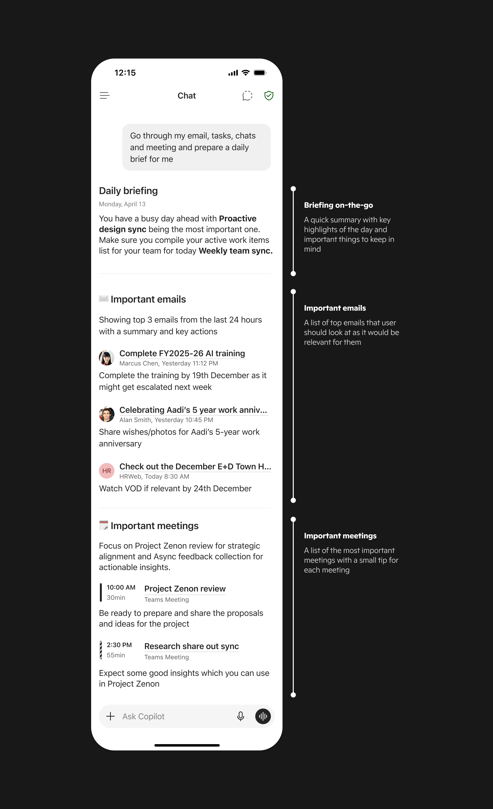
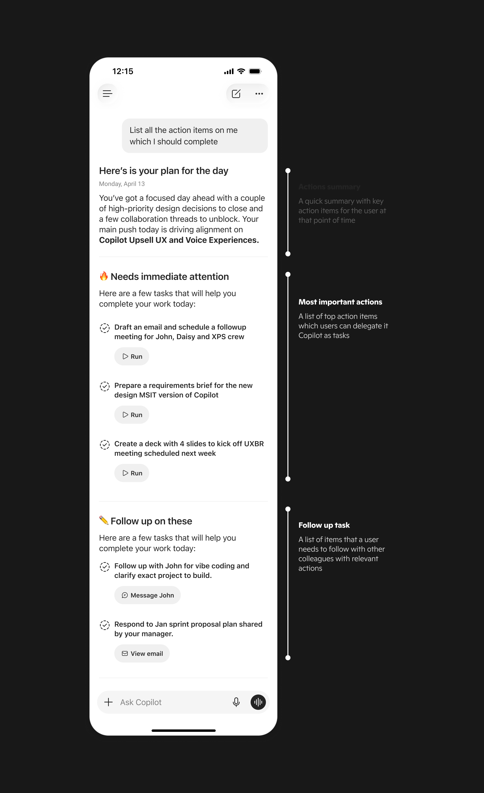

A proactive mobile experience that surfaces a timely daily brief and action cues — so people start their day prepared, not hunting across apps.
3+
Proactive scenarios powered by one framework
~2:1
Positive-feedback ratio in early rollout
1 → ∞
One surface, many proactive scenarios
Role
Senior Product Designer
Platform
iOS · Android
Scope
UX Framework · Flows · End-to-End Ownership
01 / The Problem
Mornings start fragmented. Tools wait to be opened.
People jump across email, chat, and calendar just to understand their day. The information existed — it simply never surfaced when it mattered.
User Research
Daily Context Overhead
How much effort users spent before their first productive action each morning
Source: Existing user research study conducted by a Microsoft research team
Context Gathering
Apps checked before acting
Avg. count
4+
User Sentiment
Felt "prepared" at start of day
% users
22%
Missed at least one important item
% users
68%
Only 22% of users felt prepared at the start of their day — and 68% regularly missed something important.
02 / The Insight
Don't add another app. Prepare the user before they ask.
"The problem wasn't missing information — it was that none of it surfaced when it mattered."
So instead of designing moments one by one, I built a single repeatable loop every proactive experience had to follow — one shared bar for what "good" looks like.


03 / The Design
Timing, simplicity, and scale — in that order.
01
Action-first content
Always answering "What can I do right now?" No clear action, no moment shipped.
02
Familiar response patterns
Emails surface like inbox summaries; meetings follow calendar layouts. No learning curve.
03
Designed to scale
One entry point hosts daily brief, meeting prep, catch-ups and agent actions — no redesign.
Design Explorations
Iterations across entry strategies, response formats, and content depth — balancing usefulness with intrusiveness.
Trigger / Entry Point
Push Notifications
Promotional notifications are used lightly for discovery. Scheduled notifications let users receive a daily brief or action summary at a chosen time — creating a consistent habit without feeling invasive.
In-product Chat Pill
Within the product, the entry point sits in the chat screen. The first pill hosts the daily brief and other scenarios too. A subtle visual cue paired with haptic feedback makes discovery feel playful and natural.
Pill Discovery
The pill reveals its scenario icons on load and pairs the motion with haptics — making the entry point feel alive without being intrusive.
Rich Response

Daily Brief
Meeting summaries, email highlights, and people cues — surfaced in a scannable layout optimised for the start of your day.

Action Items on Me
Tasks assigned across email, chat, and meetings — consolidated into a single actionable list with source context and quick actions.
Schedule: Repeat Usage
End-to-End Flow
Scalable Surface
04 / Impact
Users felt more prepared — not just more informed.
Early internal rollout feedback signal
~2:1
Positive feedback ratio — users reported better clarity and faster prioritisation at the start of their day.
↗
Better clarity
Users arrived at their day's priorities faster — without opening multiple apps.
3+
Proactive scenarios
Daily brief, meeting prep and catch-ups — all from one entry point in the Copilot app
∞
Scalable surface
Same entry point supports daily brief, meeting prep, catch-ups, and more
✓
Timing + relevance
When both come together, users feel prepared — not interrupted.
05 / My Role
Sole designer, end to end.
Strategy & scope
Set direction and pressure-tested the spec with the PM.
Research & data
Grounded every decision in user research and telemetry.
System & framework
Built the reusable loop powering 3+ proactive scenarios.
End-to-end UX
Concept to ship — flows, motion, iOS & Android.
Leadership reviews
Presented at milestones; aligned design with strategy.